Notes:
If you want UltiPro to be able to re-activate existing Okta users, they need to request that Customer Support turn on the following two feature flags:
JIT_USER_REACTIVATION
PROFILE_SYNC_USER_REACTIVATION
WorkNumber is a required field when using Push Profile Updates.
After selecting Enable provisioning features in Okta, the API Credentials section shown below opens. There is a section in these instructions for each required field.
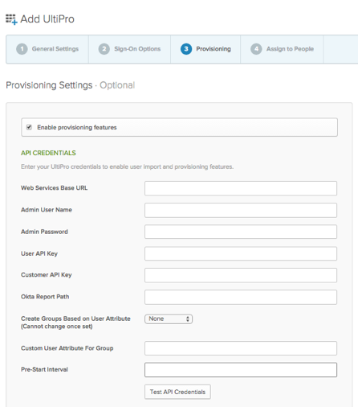
Sign in to your UltiPro administrator account and navigate to System Configuration > Web Services, as shown below.
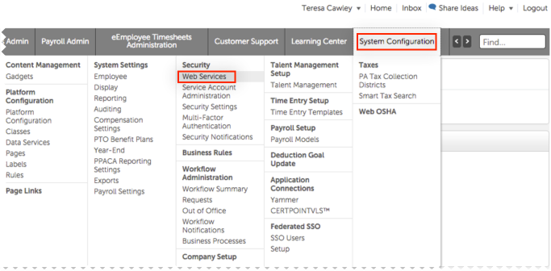
Select the Security tab. A list of endpoints appears, as shown below. The Base URL is the portion of the URL before /services... Copy the base URL for any of the endpoints. In the example shown below, the base URL is https://rental4.ultipro.com.
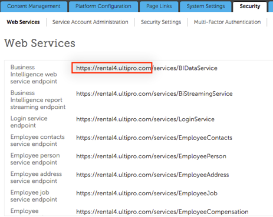
Remain on the System Configuration > Web Services screen on the Security tab. The User API Key and Customer API Key are at the top of the list, as shown below.
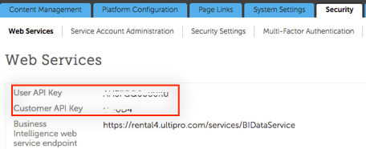
Click the link below to download the Okta Template in xml format. Select everything in the file and copy it to the clipboard.
Okta_Template.xmlOn the UltiPro administrator screen, hover on the Business Intelligence on the main menu and click on Business Intelligence that appears on the submenu, and then, select the BI UltiPro Reports link, as shown below.
Note: If you have a popup blocker enabled on your browser, you might have to disable it to view this link.
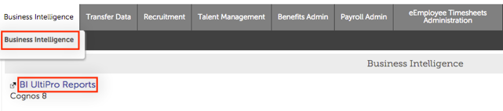
On the screen that opens, select Launch in the upper right, and then select Report Studio, as shown below.
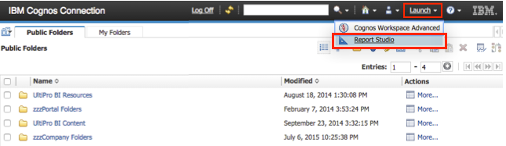
In the Select a package popup window that opens, select Administrator Package, as shown below.
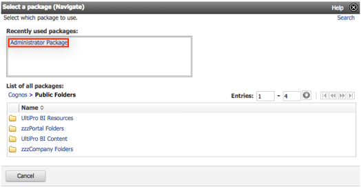
The Report Studio opens in a new window. Select Create New, as shown below.
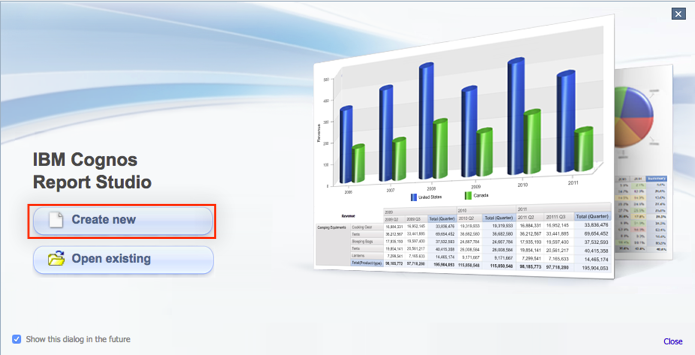
Select blank in the window that opens, as shown below.
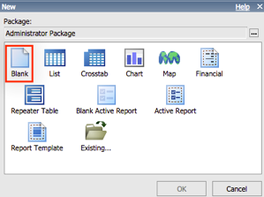
The Report Studio opens. Select Tools > Open Report from Clipboard, as shown below.
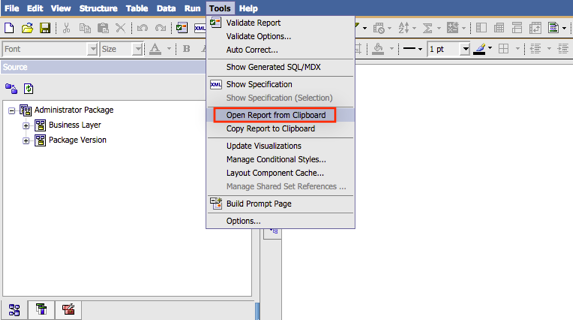
The Open Report from Clipboard windows opens. Paste all the material you copied from the xml template in step 1, above. Then, select OK, as shown below.
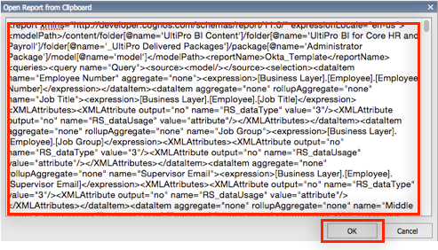
The report populates with the information from the Okta Template file, as shown below.
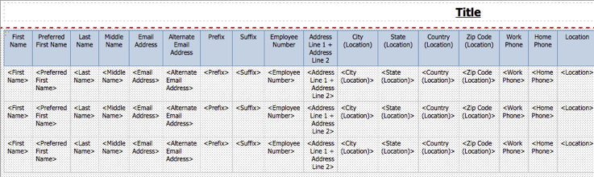
Select the Set properties icon for the report you just created, as shown below.
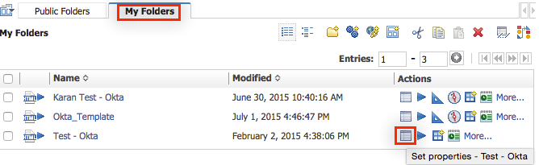
In the Set Properties window that opens, select the View the search path, ID and URL link, as shown below.

In the View the search path, ID and URL window that opens, copy the Search Path link, as shown below.
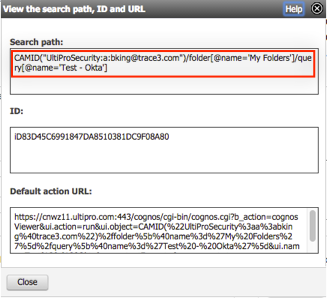
If you create group, the following operations are performed.
The following restrictions apply to all groups.
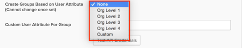
Important: If you are creating a Custom User Attribute, be sure to use the exact same name as the table name (see table shown in step 8, above).